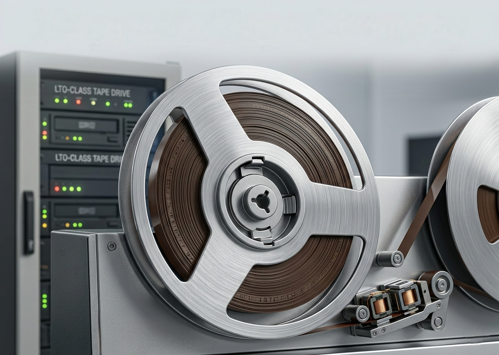
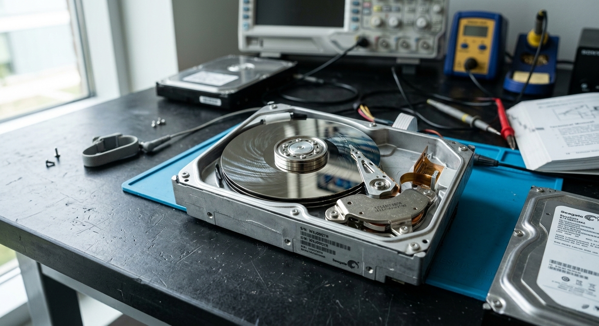
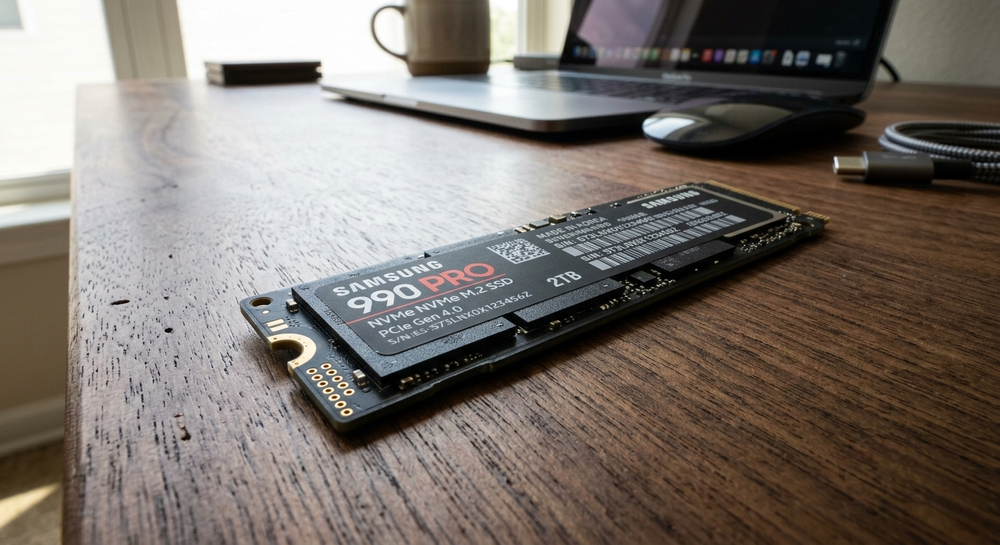
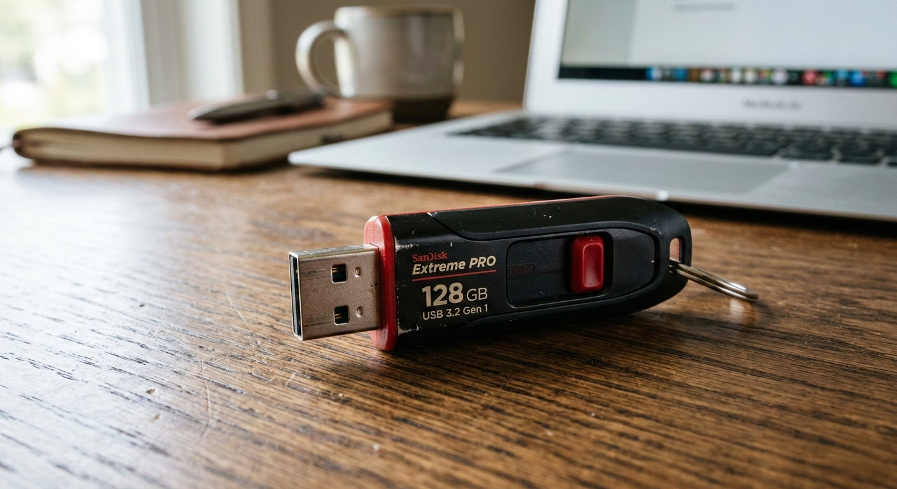
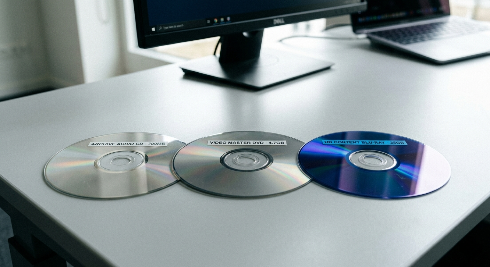

Persistent, non-volatile memory that keeps your data safe even when the power is off — the foundation of every computing system.
Secondary storage (also called auxiliary storage) is any storage medium that holds data permanently — even when the computer is switched off. Unlike primary memory (RAM), which is volatile and loses all data when powered down, secondary storage is non-volatile: the information remains intact regardless of the power state.
It is designed to store large volumes of data — operating systems, applications, documents, images, and videos — at a much lower cost per gigabyte than RAM. Secondary storage is slower to access than primary memory, but this trade-off is acceptable for long-term data retention.
Data is retained permanently even when the computer is turned off or loses power.
Designed to hold large amounts of data, measured in gigabytes (GB) or terabytes (TB).
Built to safeguard files, documents, and media safely over long periods of time.
Much cheaper per gigabyte than primary memory (RAM), making it practical for large storage needs.
Slower than RAM but still acceptable for reading/writing files, programs, and media.
Can be built inside a computer or carried externally (USB drives, memory cards).
Saves documents, images, videos, operating systems, and software programs for long-term use.
Creates copies of critical data to protect against accidental loss, hardware failure, or corruption.
Portable versions like USB drives and memory cards make it easy to move data between devices.
When you save a file, the CPU and storage controller work together through the following sequence:
Magnetic storage works by using magnetic fields and read/write heads to store data on spinning disks (platters) or on magnetic tape strips. The read/write head magnetises tiny regions on the surface, where each region represents a binary 0 or 1.
Data is organised in concentric tracks and further divided into sectors. The spinning disk brings the correct sector under the read/write head for access.

Hard Disk Drive (HDD)| Property | Value | Notes |
|---|---|---|
| Capacity | 500 GB – 20 TB | Consumer to enterprise range |
| Read Speed | 80 – 160 MB/s | Sequential read |
| Rotation Speed | 5,400 – 7,200 RPM | Higher RPM = faster access |
| Interface | SATA, SAS | SATA for consumer, SAS for server |
| Access Time | ~5 – 10 ms | Mechanical seek delay |
| Cost per GB | ~$0.02 – $0.04 | Very economical |
Solid-state storage uses integrated circuit assemblies (NAND flash memory chips) to store data electronically. Crucially, it has no moving parts — data is stored in tiny transistor cells that hold an electrical charge, which represents binary data.
Because there is no physical movement required, SSDs can access any block of data almost instantly, making them dramatically faster than HDDs.

NVMe M.2 SSD
USB Flash Drive & SD Cards| Property | SATA SSD | NVMe SSD |
|---|---|---|
| Capacity | 128 GB – 4 TB | 256 GB – 8 TB |
| Read Speed | ~550 MB/s | 3,500 – 7,000 MB/s |
| Write Speed | ~520 MB/s | 3,000 – 6,500 MB/s |
| Interface | SATA III | PCIe 3.0 / 4.0 |
| Form Factor | 2.5" / M.2 | M.2 / PCIe slot |
| Cost per GB | ~$0.06 | ~$0.08 – $0.15 |
Optical storage uses a laser beam to read and write data on the surface of a disc. Data is encoded as microscopic pits (indentations) and lands (flat areas) on a reflective layer. The laser detects the difference in light reflection between pits and lands to read binary data.
Write-once discs (like CD-R) burn permanent pits using a higher-powered laser. Rewritable discs (like CD-RW) use a phase-change material that can be reset.

Optical Discs (CD / DVD / Blu-ray)| Format | Capacity | Use Case |
|---|---|---|
| CD-ROM | 700 MB | Audio, software |
| DVD (SL) | 4.7 GB | Movies, data |
| DVD (DL) | 8.5 GB | Larger software |
| BD-R (SL) | 25 GB | HD video |
| BD-R (DL) | 50 GB | 4K archiving |
| BD-R (XL) | 100 GB | Bulk archiving |
| Device | Technology | Speed | Capacity | Cost/GB | Moving Parts? | Best For |
|---|---|---|---|---|---|---|
| HDD | Magnetic | Medium | Very High | Very Low | Yes | Bulk storage |
| Magnetic Tape | Magnetic | Very Low | Extremely High | Lowest | Yes | Archiving |
| SSD (NVMe) | NAND Flash | Very High | High | Medium | No | OS / apps |
| USB Flash Drive | NAND Flash | Medium | Medium | Low | No | Data transfer |
| SD Card | NAND Flash | Medium | Low–Medium | Low | No | Mobile devices |
| DVD | Optical Laser | Low | Low | Very Low | Yes | Media distribution |
| Blu-ray | Blue Laser | Low–Medium | Medium | Low | Yes | HD archiving |
7 questions based on the content above. Select an answer to see the explanation, then press Next.